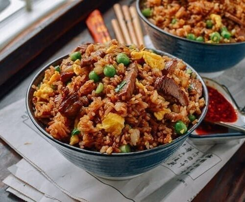

Fried Rice Recipe

This chinese-inspired recipe of homemade fried rice is a combination of rice, vegetables and herbs along with egg and protein. With this recipe, you will never think about take food ever.
Ingredients
- 3 tablespoons butter
- 2 eggs, whisked
- 2 medium carrots, peeled and diced
- 1 small white onion, diced
- 1/2 cup frozen vegetables
- 3 cloves garlic, minced
- salt and black pepper
- 4 cups cooked rice
- 3 green onions, thinly sliced
- 3–4 tablespoons soy sauce, or more to taste
- 2 teaspoons oyster sauce (optional)
- 1/2 teaspoons toasted sesame oil
Steps
- Heat 1/2 tablespoon of butter in a large sauté pan* over medium-high heat until melted.
- Add egg, and cook until scrambled, stirring occasionally. Remove egg, and transfer to a separate plate.
- Add an additional 1 tablespoon butter to the pan and heat until melted.
- Add carrots, onion, peas and garlic, and season with a generous pinch of salt and pepper
- Sauté for about 5 minutes or until the onion and carrots are soft.
- Increase heat to high, add in the remaining 1 1/2 tablespoons of butter, and stir until melted
- Immediately add the rice, green onions, soy sauce and oyster sauce (if using), and stir until combined.
- Continue sautéing for an additional 3 minutes to fry the rice, stirring occasionally.
- Then add in the eggs and stir to combine
- Remove from heat, and stir in the sesame oil until combined.
- Taste and season with extra soy sauce, if needed.
- Serve immediately, or refrigerate in a sealed container for up to 3 days.